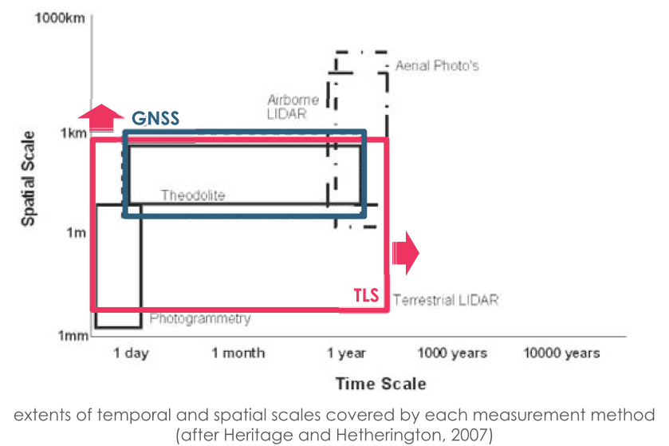

事例紹介 TLS
LRD + DGNSS + APSD なんちゃってレーザスキャナ
Laser range finder（TruPulse） + Automatic panorama shooting device（GigaPan）

Result at Ikitepe
- 1 person
- 2.5 hours
- 350 m × 200 m
- 4-m DEM

地上レーザスキャナ TLS

Japan
- 崩壊地 / landslides
- 井川演習林 / Shizuoka Ikawa
- 阿蘇仙酔峡 / Mt. Aso
- 土石流堆積物 / debris flow deposits
- 大谷崩 / Shizuoka Ohya
- 泥火山 / mud volcano
- 新潟十日町 / Niigata Tokamachi
- 洞窟 / caves
- 竜ヶ岩洞 / Ryugaiwa cave, Shizuoka
- あぶくま洞 / Fukushima Abukuma
- 吉見百穴 / Saitama Yoshimi
- 滝 / waterfalls
- 日光華厳滝 / Tochigi Kegon
- 赤水滝 / Shizuoka Akamizu
- 建材風化 / building materials
- 安田講堂 / U-Tokyo
- 青島 / Miyazaki Aoshima
- 海鹿島 / Choshi
- 津波侵食・堆積 / tsunami feartures
- 三陸海岸 / Tohoku Sanriku
- 和歌山 / Wakayama
- 石垣島 / Ishigaki Island
- 火口 / volcanic craters
- 立山室堂地獄谷
- Tateyama
World
- 建材 / building materials
- Orval, Belgium & Reims, France
- 氾濫原堆積物 / floodplain deposits
- Christchurch, New Zealand
- 熱帯雨林 / tropical rain forest
- Atherton, Australia
詳細事例紹介① 日光華厳滝 / Kegon Falls

※Video1: https://vimeo.com/111282633 ※Video2: https://vimeo.com/111264681
UAS-Derived textured 3d model

※3D model: https://sketchfab.com/models/a46803d865a747579906ebe7bd784e8f
comparison: 2012 to 2014


詳細事例紹介② 大谷崩（日本三大崩れ・静岡） / Ohya-kuzure landslides

※Movie: https://vimeo.com/137219218
土石流 debris flow

※Movie: https://vimeo.com/143258205
地形変化：TLS & GNSS in steep headwater channel for debris flow deposits
- GLS-1500 by Topcon Co., Tokyo
- accuracies
- distance: 4 mm @ 150 m
- maximum distance
- 500 m （90 % reflectance）
- weight
- 16 kg（body） + battery, tripod, pc, etc.（30-40 kg）
- GCPs by PPK-GNSS
土石流による堆積物の変化 / sediment changes by debris flow

deposition in winter ⇒ spring for three years

erosion in summer mostly by debris flow

上流の土砂移動の動態から下流の防災へ / sediment dynamics for disater prevention

詳細事例紹介③ 文化財計測 ~ミリメートルの空間～ / mm-scale measurements for cultural heritage
安田講堂正面ポーチ石材風化マッピング / mapping sandstone weathering at Yasda-Kodo Auditorium


rock weathering - short-range TLS

spatial & time scales by GNSS & TLS

spatial resolution（accuracy） & area

ところで / BTW

example of Google Earth

privacy
移動する人やものに反射したレーザ点 / unexpected points over moving items

noise
データサイズ大 ⇒ 解析の時間的コスト / large datasets ⇒ time cost for analysis

data size
高解像度に見れば見るほど... / high resolution, but...

一歩引いて、見えるもの。 / one step back, then you will see it.

高解像度化 ≠ 高鮮明化 / higher-resolution ≠ higher-definition or clarification

鮮明化とは？ / clarification?